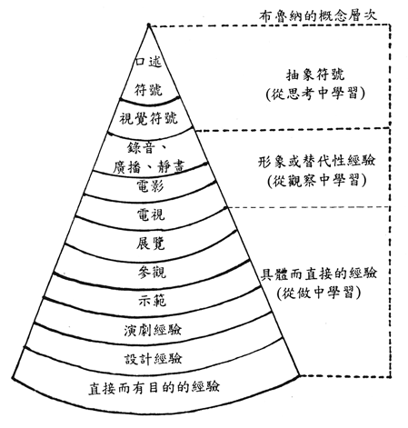
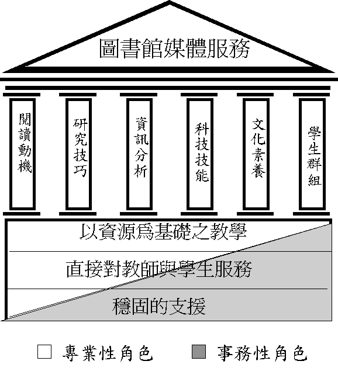

¤j¾Ç¹Ï®ÑÀ]²Ä¤@¨÷²Ä¥|´Á¡]86.10¡^
¤j¾Ç¹Ï®ÑÀ]µøÅ¥ªA°Èªº·s¹Á¸Õ
--¥H¥x¤j¹Ï®ÑÀ]¦h´CÅéªA°È¤¤¤ß¬°¨Ò
µ£±Ó´f Miin-Huei Tung
»OÆW¤j¾Ç¤å¾Ç°|¹Ï®Ñ¤ÀÀ]¥D¥ô
Head, Humanities Collection,
National Taiwan University Library
E-mail:
[ºKn]
¡@¡@ªñ¦~¨Ó¡A¥Ñ©ó¹q¸£»P³q°T§Þ³Nªº§Ö³tµo®i¡A¦UºØ·s´CÅé§ó¬O¦p«B«á¬Kµ«¯ë¦a¥X²{¡A¨³³t¦a¶Ç¹F¦U¶µ¸ê°T¡A¦b³oÓ¥Rº¡´CÅ骺¸ê°TªÀ·|ùØ¡A¤j¾Ç¹Ï®ÑÀ]¦b±¹ï·s´CÅ骺½ÄÀ»¤U¡A¬°¤FºûÅ@¨ä¦b¤j¾ÇùØ즳ªº«n¨¤¦â¡A¦b¦æ°Ê¤W¥²¶·§ïÅÜ¥H©¹ÀRºA¡B³Q°ÊªºªA°È¬°¿n·¥¡B¥D°Ê´£¨Ñ¸ê·½ªºªA°È¡F¦b¸ê®Æªº¦¬Âýd³ò¤W¥ç¥²¶·®e¯Ç§ó¦hªº¸ê°T®É¥N²£ª«¡A¤~¯à°÷½T¹ê¦a¨ó§U»P´£¨Ñ±Ð¾Ç©M¬ã¨s¬¡°Ê¡C
¡@¡@¥»¤å¸Õ¹Ï±qµøÅ¥´CÅé¦b±Ð¾Ç»P¾Ç²ß¤W©Ò§êºtªº¨¤¦â©MµøÅ¥(´CÅé)¤¤¤ßªºªA°È¼h¦¸¡AÄÄ©ú¦b¸ê°T»P¦h´CÅé®É¥NùØ¡A¤j¾Ç¹Ï®ÑÀ]µøÅ¥(´CÅé)¤¤¤ßªº©w¦ì»P¥ô°È¡A¥H¤Î¨ä©ÒÀ³¹F¦¨ªºªA°È¼h¦¸¡C¦¹¥~¡A¨Ã¥H°ê¥ß»OÆW¤j¾Ç¹Ï®ÑÀ]·sÀ]©Ò³W¹ºªºµøÅ¥ªA°È¬°¨Ò¡A¨Ó±´°Q¥¼¨Ó¤j¾Ç¹Ï®ÑÀ]µøÅ¥ªA°Èªº·s¤è¦V¡C
¡@
Abstract
¡@¡@Recently, Due to the rapid development of computer and telecommunication technology, many kinds of new media, such as CD-ROM, VCD, Interactive software, etc. are appeared and which are greatly impacting on the society. In the coming information and multimedia age, the universtiy libraries must provides new media collections and services to meet the teaching ,learning & research needs.
¡@¡@The purpose of this paper is to discuss what kinds of audio-visual and media services shall be provided by the university library in the information age. Firstly, the author emphasizes the importance of AV & media resources in instructional process; Secondly, interduces the role of university library media center; and finally, describes the future planning of media services at the National Taiwan University Library.
¡@
ÃöÁäµü¡GµøÅ¥ªA°È¡F´CÅéªA°È¡F¦h´CÅéªA°È¤¤¤ß¡F´CÅé±M®a¡F´CÅ餤¤ß
Keywords:Audio-Visual Services ; Multimedia ServicesLibrary Media Center ; Multimedia Center ; Library Media Specialist
¡@
¤@¡B«e¨¥
¡@¡@¤HÃþ¦b¤å¦r¤Î¦L¨êµo©ú¥H«e§Y§Q¥Î¹Ï¹³»PÁnµ¨Ó¶i¦æ¸gÅç»P¤å¤Æªº¶Ç»¼¡A¦P®É¤]³z¹Lµøı»Pťı·P©x¨Ó±µ¦¬°T®§¤Î¾Ç²ß¡CÀHµÛ®É¥Nªººt¶i¡A¹q¼v¡B¹qµø¡B¹q¤l¤u·~¤Î¹q¸£·s¬ì§Þªºµo®i¡B¤H³y½Ã¬Pªºµo©ú»P¹B¥Î¡B³q°T¤è¦¡ªº²·s¡Bºô»Úºô¸ôªº¨Ï¥Îµ¥¡A¨Ï±o·U¨Ó·U§Öªº¶Ç¼½§Þ³N³Ð³y¥X§ó¦hªº¸ê°T¡A¦Ó¤H»P¤H¤§¶¡ªº®ø®§¶Ç¼½¡A¥H¤ÎÓ¤H¹ï¸ê°TªºÀò±o¡A¤£¦A¥H¶Ç²Î¦L¨ê¤å¦r¸ê®Æ¬°º¡¨¬¡A¦]¦¹¦UºØÃþ«¬ªº´CÅé¥çÀ³¹B¦Ó¥Í¡C¦b§Ú̩ҥͬ¡ªºÀô¹ÒùØ¡A§Ú̦¤w²ßºD¸g¥Ñ®ÑÄy¡B³ø¯È¡BÂø»x¡B¹qµø¡B¿ýµ±a¡B¿ý¼v±a¡B°Û¤ù¡B¼v¤ù¡B¤Û¿O¤ùµ¥´CÅé¨Ó¤¬¬Û¥æ´«°T®§¡AÀò±o¸ê°T
(µù1)¡C¦«¦ò°Ç(Alvin Toffler)¤]»{¬°¦b²Ä¤Tªiªº½ÄÀ»¤U¡A¦h¼Ë¤Æªº·s¶Ç¼½¤u¨ã¥¿¨³³tÁcl¡A´¦¶}¤@ÓÄÝ©ó¦h¼Ë¤Æ´CÅ骺®É¥N·s¬ö¤¸(µù2)¡C¡@¡@ªñ¦~¨Ó¡A¥Ñ©ó¹q¸£»P³q°T§Þ³Nªº§Ö³tµo®i¡A¦UºØ·s´CÅé§ó¬O¦p«B«á¬Kµ«¯ë¦a¥X²{¡A¨³³t¦a¶Ç¹F¦U¶µ¸ê°T¡A¨Ã»P¬J¦sªº´CÅ餬¬ÛÁpµ²¡B¿Ä¦X¡A©¼¦¹¤¬³q¸ê®Æ¡B¼v¹³©M¶H¼x²Å¸¹
(µù3)¡C¦b³oÓ¥Rº¡´CÅ骺¸ê°TªÀ·|ùØ¡A¤£½×¥Í¬¡©Î¤u§@¤W¬Ò·U¨Ó·U»Ýn´x´¤¸ê°Tªº§Þ¥©¡A¦Ó¦¹§Þ¯àªºÀò±o¡A¤£¬O¾a±Ð¬ì®Ñ©Î°V½m½Òµ{§Y¥i¾Ç·|¡A¦Ó¬O¥²¶·¸g±`±µÄ²´CÅé¡A±q´CÅé¥h¾Ç²ßªÀ·|³W½d©M°µ¨Æªº¤è¦¡(µù4)¡C¦]¦¹¡A¦«¦ò°Ç»{¬°¡u¦b±Ð¨|¤W¡A§ÚÌ¥²¶·«·s«ä¦Òªº°ÝÃD¤w¤£¦A¬O¹wºâ¡B¯Z¯Å¤j¤p¡B±Ð¾ûÁ~¤ô©M¹ï¶Ç²Î½Òµ{¦w±Æªºª§°õ¡C¸ò¶Ç²Î²Ä¤Gªi¹qµø¥x¤@¼Ë¡A§Ú̪º¤j²³±Ð¨|Åé¨t¤w¸g¹L®É¡C¸ò¹qµø¸`¥Ø¤@¼Ë¡A¥¼¨Óªº±Ð¨|»Ýn¥Ñ§ó¦hºÞ¹D¦P®É¶i¦æ¡A¨Ã¦³¤£¦Pªº±Ð¾Ç¤º®e¡C¾Ç®ÕÀ³¸ÓÅý¾Ç¥Í¦³§ó¦hªº¿ï¾Ü¡A¤~¯àÅý¾Ç¥ÍÀ´±o¾AÀ³¥¼¨Óªº²Ä¤TªiªÀ·|¡A§óÅý¾Ç¥Í¦¨¬°´I¦³¸gÀٮįqªºªÀ·|¤@¥÷¤l¡v(µù5)¡C¦b½Í¨ì±Ð¨|»P´CÅ骺Ãö«Y®É¡A¨ä§ó±j½Õ¡G¡@
±Ð¨|©M·s´CÅé¨t²Î¤§¶¡ªºÃö«YÀ³¸Ó¶V¨Ó¶V±K¤Á¡A¦Ó¥BÀ³¸ÓÅý±Ð¨|¨t²Î¸ò´CÅé¨t²Î¦³§ó¦h°t¦X»P¦X§@¡C...Àu¥ýªº¤u§@¬On¾¨§Ö±À¼s¹q¸£¡B¸ê°T¬ì§Þ©M¦yºÝ´CÅ骺´¶¤Î²v...·íµM¤£¥²¨CÓ¤H³£Åܦ¨¹q°T¤uµ{®v©Î¹q¸£±M®a¡A´N¹³¤£¥²¨CÓ¤H³£À´±oרT¨®¤@¼Ë¡A¦ý¨CÓ¤H¥²¶·À´±o¦p¦ó§Q¥Î´CÅé¨t²Î...
¡@
¡@¡@¤j¾Ç¬J¬O¤HÃþ¤å¤ÆªºÄ_ÂëÎ
(µù7)¡A¬O¾ÇªÌ©M¾Ç¥Í°l¨D¯u²zªº³õ©Ò(µù8)¡A¦Ó¹Ï®ÑÀ]§ó¬O¤j¾Çªº®Ö¤ß¡A¥¦¦p¦P¤@Ӹ귽¤¤¤ß¡F´£¨Ñ¤j¾ÇÀ³¨ã³Æªº¥\¯à--±Ð¾Ç»P¬ã¨s¡A¥H³Ð³y·sª¾ÃѨöǻ¼²{¦b»P¹L¥hªº¾ÇÃÑ©M¤å¤Æ¤©«á¥N(µù9)¡C¦]¦¹¤j¾Ç¹Ï®ÑÀ]¦b±¹ï·s´CÅ骺½ÄÀ»¤U¡A¥²¶·§ïÅܨä¥H©¹¶È¥Dn¦¬ÂæL¨ê¸ê®Æªº¶Ç²Î¬Fµ¦¡A¤~¯àªï¦X²{¤µ¸ê°T®É¥Nªº»Ý¨D¡A¨Ã¥B¬°¤FºûÅ@¨ä¦b¤j¾ÇùØ즳ªº«n¨¤¦â¡A¦b¦æ°Ê¤W§ó¥²¶·§ïÅÜ¥H©¹ÀRºA¡B³Q°ÊªºªA°È¬°¿n·¥¡B¥D°Ê´£¨Ñ¸ê·½ªºªA°È¡F¦b¸ê®Æªº»`Âýd³ò¤W¥ç¥²¶·®e¯Ç§ó¦hªº¸ê°T®É¥N²£ª«¡A¤~¯à°÷½T¹ê¦a´£¨Ñ±Ð¾Ç©M¬ã¨s¬¡°Ê¡Cªñ¦~¨Ó¡AÀHµÛµøÅ¥¤Î¦UºØ¦h´CÅé¸ê®Æ¥Xª©ªº½´«kµo®i¡A¤j¾Ç¹Ï®ÑÀ]¥ç³vº¥»`ÂøÓÃþ¸ê®Æ¡A¦ý¨ä©Ò´£¨ÑªºµøÅ¥ªA°È±¹¬I¡A¤´¦h°±¯d¦b¶È´£¨ÑµøÅ¥¾¹§÷³]³Æ¨ÑŪªÌ¨Ï¥ÎµøÅ¥¸ê®Æªº³Q°ÊªA°È¤W¡C¦]¦¹¡A¦b²{¤µ¦h´CÅé»P¸ê°T®É¥NùØ¡A¤j¾Ç¹Ï®ÑÀ]À³¦p¦óµ½¥Î¦h¼Ë¤Æªº·s´CÅé¨t²Î¡B¥D°Ê¦a´£¨Ñ¦h¼ËªºµøÅ¥´CÅéªA°È¡A¥H±j¤Æ¤j¾Ç±Ð¾Ç©M¬ã¨s»Ý¨D¡A±N¬Oȱo§Ú̲`«äªº½ÒÃD¡C¡@
¤G¡BµøÅ¥´CÅé¦b±Ð¾Ç»P¾Ç²ß¤W©Ò§êºtªº¨¤¦â
¡@¡@¤HÃþ¹ï©ó¨Æ°Èªº¾Ç²ß¤j¦h¼Æ§¡¶·³z¹Lµøı©Mťı¡A¦b¸gÅçÀò¨úªº³~®|¤¤¡Aµøı¸gÅç¦û40%¡Aťı¸gÅç¦û25%¡AYµøı»Pťı¨âªÌ¥[¥Hµ²¦X¡A«h¹F70%¡C¬ü°êµøÅ¥´CÅé±M®a§d¨U´µ¡]R.H.Wodsworth¡^¥ç»{¬°Âǥѵøı¾¹©xªº¾Ç²ß¬ù¦û70%¡A¸g¥Ñťı¾¹©xªº¾Ç²ß«h¬ù¦û20%¡C¬G¹ï©ó¸gÅ窺¾Ç²ß»P¯d¦sY³z¹LµøÅ¥ªº¤èªk¡A±N¯à¨Ï²ß±oªº°T®§¦b°O¾Ð¤¤¦s¯d¸û¤[
(µù10)¡CÀ¹º¸³Õ¤h¡]Dr. Edgar Dale¡^´¿´N¤HÃþ¸gÅ窺ºc¦¨¥[¥H¤ÀªR¡A´£¥X¡u¸gÅ窺ª÷¦r¶ð¡]The cone of Experience¡^¡v¥HÂk¯Ç¦UºØ¤£¦Pªº¾Ç²ß¸gÅç¡A¨Ã§e²{¥Ñ¨ãÅé¨ì©â¶H¤§¦UºØ¤£¦Pªº¨ë¿Eª«©MµøÅ¥´CÅé¡C²¨¥¤§¡AÀ¹º¸³Õ¤hªº²z½×µÛ«¦b¹ï¾Ç²ßªÌ§e²{¦UºØ¸gÅ礧²£¥Íªº¨ë¿E´CÅé¡C¤ß²z¾Ç®a¥¬¾|¯Ç¡]Jerome Bruner¡^«h±q¥t¤@Ó¨¤«×¨Ó¬Ý¡F¥L§â±Ð¾Ç¬¡°Ê¤À¬°¡ª±q°µ¤¤¾Ç²ß¡ª¡B¡ª±qÆ[¹î¤¤¾Ç²ß¡ª¡A¥H¤Î¡ª±q«ä¦Ò¤¤¾Ç²ß¡ª¤TÃþ¡A¨Ã±N¦¹¤TÃþ¬¡°Ê¹ïÀ³¨ìÀ¹º¸³Õ¤hªº¸gÅçª÷¦r¶ð¤W(µù11)¡]¹Ï¤@¡^¡C¥¬¾|¯Ç¦b°Q½×¨ì¡u±Ð¾Ç²z½×¡v®É¡A´¿¥D±i±Ð¾ÇªÌ¥²¶·´£¨Ñ¾Ç²ßªÌ¥Hª½±µ¸gÅç¨Ó¶i¦æ¾Ç²ß¡A±q¸gÅ窺§Î¶Hªí²{¡]¦p¹Ï¤ù¡B¼v¤ùµ¥¡^¨ì²Å¸¹ªí²{¡]¦p»y¨¥¡B¤å¦r¡^(µù12)¡C¦]¦¹¡A¥Ñ¤Wz²z½×¤¤¡A§ÚÌ¥i¥H¤F¸Ñ¨ì¦h¨Ï¥Î¨ãÅ骺¤è¦¡¨Ó¶i¦æ±Ð¾Ç¡A¥i¥H´î¤Ö©â¶Hªº»y¨¥¡B¤å¦r²Å¸¹±Ð¾Ç®É©Ò¤Þ°_ªº§xÂZ¡F¦h§Q¥Î´À¥N©Êªº¹Ïµe¸gÅç¡A¤]´N¬OµøÅ¥´CÅé¨Ó±Ð¾Ç¡A±N¥i¦³®Ä¦a«P¶i±Ð¾Ç(µù13)¡F¦P¼Ë¦a¡A¾Ç²ß®ÉY¯à¥H¸gÅ笰°ò¦¡A±N¯à¨Ï¾Ç²ß§ó¥[²`¨è¡B§ó¦³®Ä²v¡C¡@

¹Ï¤@¡GÀ¹º¸³Õ¤hªº¸gÅçª÷¦r¶ð»P¥¬¾|¯Çªº¾Ç²ß·§©À
¡@
¡@¡@³Ò·ç©Ô¼w¤k¤h¡]Diana Laurillard¡^¦b¨ä©ÒµÛ ¡¨Rethinking University Teaching¡¨¤@®Ñ¤¤±j½Õ±Ð¾Ç¬O³Ð³y¾Ç²ßÀô¹Ò¥H¨Ï¾Ç¥Í¯à°÷¤F¸Ñ¥@¬É¡F¦Ó±Ð®vªº³d¥ô§ó¦b©ó³Ð³y¨Ï¾Ç¥Í©ö©ó¤F¸Ñ¤Î¾Ç²ßªº±¡¹Ò¡AÅý¾Ç¥Í±q¤¤Àò¯q¡A¨Ï¾Ç²ß¦¨¬°ÅéÅç¥@¬Éªº¤èªk
(µù14)¡A¬G«Øij±Ð®vÀ³µ½¥Î¦U¦¡±Ð¾Ç´CÅé¡C¦¶ÄRÄR³Õ¤h»{¬°µøÅ¥±Ð¨|¬O¶°µ²Án¥ú¡B¤å¦r¡B¹Ï®Ñ¡B»y¨¥µ¥ªº¤@ºØ±Ð¾Çªk¡A¬O¤@ºØ¨}¦nªº±Ð¾Çªk¡AY¬O¹B¥Î±o·í¡A¹ï¦Ñ®v¦Ó¨¥¡A¤W½Ò»´ÃP¡A¨Ã¥i±NªO®Ñ©Ò¸`¬Ù¤U¨Óªº®É¶¡¥hÆ[¹î¾Ç¥Íªº¤ÏÀ³¡F¹ï¾Ç¥Í¦Ó¨¥¡A¤W½Ò¥Í°Ê¡B¬¡¼â¡B¦³½ì¡A®ÄªG¤j(µù15)¡C¦]¦¹¡AµøÅ¥´CÅé¦b±Ð¾Ç»P¾Ç²ß¤¤¦û¦³¬Û·í¤£¥i©¿µøªº¦a¦ì¡A¾A·í¦aÀ³¥ÎµøÅ¥´CÅ餣¦ý¯à¨Ï±Ð¾Ç¬¡¼â¥Í°Ê¦³½ì¡B¸`¬Ù¶Ç¹F·§©À©Òªá¶Oªº®É¶¡¡A¥ç¯à¨Ï¾Ç²ß¦]³z¹LµøÅ¥´CÅ餧¨ãÅé¤Î¸gÅ窺ªí¹F¡A¦ÓÅý¾Ç²ßªÌ¦L¶H¹ï©Ò¾Çªº¨Æ°È©M·§©À·P¨ü¨ãÅé¡B¯u¹ê¡B²`¨è¨Ã«O«ùªø¤[¡C¦¹¥~¡AµøÅ¥´CÅé§ó¯à¬ð¯}®É¶¡»PªÅ¶¡ªº¨î¡AÅý¾Ç²ßªÌ±o¥H¨Ì¦Û¤vªº²z¸Ñ¯à¤O¡A¦Û¦æ±±¨î¾Ç²ßªº¶i«×¡A«K©ó¦Û§Ú¾Ç²ß¨Ã¯à¦³§U©óÓ¤Hªº²×¨¾Ç²ß¡C¡@
¤T¡BµøÅ¥(´CÅé)¤¤¤ßªºªA°È¼h¦¸
¡@¡@¬ü°ê¾ÇªÌù·²º¸¡]David V. Loertscher¡^¦b¨ä©ÒµÛ¡ªTaxonomies of the School Library Media Program¡¨¤@®Ñ¤¤
(µù16)´£¨ì¤@Ө嫬ªº¹Ï®ÑÀ]´CÅéªA°È¥²¶·«Ø¥ß¦b¤TÓ°ò¥Û¤§¤W¡A²Ä¤@Ó°ò¥Û¬°¦s¦³Â×´I´CÅé¸ê®ÆªºÀx¦s©Ò¡A¸Ó³B¥i´£¨ÑÅý¤H©ö©ó¨Ï¥Î¸ê®Æ¡B¾¹§÷¡A¥H¤Î³]³Æ¤§ªA°È¡F²Ä¤G¼h°ò¥Û¤D¬O¹ï±Ð®v¤Î¾Ç¥Í´£¨Ñª½±µªºªA°È¡A¨äªA°È¥]¬A¹ïÓ¤Hªº°Ñ¦Ò¿Ô¸ß¡B¥D°Ê¤Î¨ó§U±Ð®v»P¾Ç¥Í»`¶°¸ê®Æ¡B§@¦nŪªÌ¤§¤½¦@Ãö«Y¡A¥H¤ÎÀ³±Ð®vªº½Ð¨D¤ä´©±Ð¾Ç¬¡°Êµ¥¡F²Ä¤T¼h°ò¥Û«h¬O¥H¸ê·½¬°°ò¦ªº±Ð¾Ç¡A¨ä¤£¦P©ó¥H±Ð¬ì®Ñ¡]textbook-based¡^¬°°ò¦ªº±Ð¾Ç¡A´«¨¥¤§¡A§Y¬OµÛ«©ó¹B¥Î´CÅ骺±Ð¾Ç¡A¹Ï®ÑÀ]©Ò´£¨Ñªº´CÅéªA°Èª½±µ¹ï¾Ç²ß²£¥Í¼vÅT»P®Ä¥Î¡A¦¹¬°¤T°ò¥Û¤¤³Ì«nªº³¡¥÷¡Cù·²º¸¦A±N¦¹¤T°ò¥Û¹º¤À¬°¨âÓ¤T¨¤§Î¡]¹Ï¤G¡^¡A°Ï¤À¥XÀ]û¦b¦¹¤T¼h°ò¥Û¤¤§êºt¨Æ°È©Ê¤Î±M·~©Ê¨¤¦â©Ò¾á¥ôªº¤u§@»P´£¨ÑªºªA°È¶µ¥Ø¡C¡@

¹Ï¤G¡G¹Ï®ÑÀ]´CÅéªA°È
¡@
¡@¡@¦¹¥~¡Aù·²º¸¦A±N¹Ï®ÑÀ]´CÅéªA°Èªº¼h¦¸¤À¬°¤Q¤@Ãþ¡A¨C¤@Ãþ¯Å¹ï¾ãÅ骺´CÅéªA°È¬Ò¬O«Ü«nªº¡F¦Ó¹Ï®ÑÀ]ªº´CÅé±M®a¡]library media specialist¡^¥i¿n·¥°Ñ»P¥ô¦ó¤@Ãþ¯ÅªºªA°È¡C¦UÃþ¯ÅªºªA°È¤º®e²z¦p¤U¡G
¡@¡@¡@²Ä¤@Ãþ¯Å¬°¤£°Ñ»P¡G¹Ï®ÑÀ]´CÅéªA°È¤¤¤ß§¹¥þ¤£°Ñ»P¥ô¦óªº±Ð¾Ç©M¾Ç²ß¬¡
¡@¡@¡@°Ê¡C
¡@¡@¡@²Ä¤GÃþ¯Å¬°¦Û§U¦¡ªº´CÅéÜ®w¡GŪªÌ¥i¦Û¦æ¨Ï¥Î³]³Æ»P´CÅé¸ê®Æ¡A¹Ï®ÑÀ]´C
¡@¡@¡@Åé±M®a«ht³d¸ê®Æ©M¾¹§÷ªº±ÄÁÊ¡B»`¶°¡B¾ã²z¡B¬y³q¤ÎºûÅ@¡A¦¹¬°¹Ï®ÑÀ]´C
¡@¡@¡@Å餤¤ßªº°ò¥»ªA°È¡C
¡@¡@¡@²Ä¤TÃþ¯Å¬°Ó§O¤§°Ñ¦Ò¿Ô¸ßªA°È¡G¦¹®É´CÅé±M®a§êºt¦p¦PÅ]³N®vªº¨¤¦â¡A¨ã
¡@¡@¡@³Æ²`¨è¤F¸ÑÀ]Âèïà§Q¥Î¦UºØ¸ê·½¦pÀ]»Ú¦X§@¡Bºô¸ô¸ê®Æ®w¬d¸ßµ¥¥HÀ°§U±Ð
¡@¡@¡@®v¤Î¾Ç¥Í§ä´M¸ê®Æªº¯à¤O¡A¨ä¤£¦ý¯à¾A®É´£¨Ñ¤Î¶Ç»¼¸ê®Æµ¹ÅªªÌ¡A¦P®É¥ç¯à
¡@¡@¡@¨ó§UŪªÌ¾Ç²ß§ä´M©Ò»Ý¸ê®Æªº§Þ¯à¡C
¡@¡@¡@²Ä¥|Ãþ¯Å¬°¶¶¨ä¦ÛµM¦a¤¬°Ê©M»`¶°¸ê®Æ¡G´CÅ餤¤ß¥¤é§Y¤w¥D°Ê»`¶°¦U¶µ¸ê
¡@¡@¡@®Æ¡A·í±Ð¾Ç»P¾Ç²ß»P©Ò»`¶°¤§¸ê®Æ¬ÛÃö®É¡A´CÅé±M®a«K¯à¦ÛµM¦ÓµM¦a´£¨Ñ¨ä
¡@¡@¡@©Ò»Ý¤§¸ê®Æ¡C¦¹ºØ¤£¨è·N¦w±Æªº»Ý¨D»P¤¬°Êµ²ªG¡A±N·|ÂI¿U¾Ç¥Í²×¨¾Ç²ß¿³
¡@¡@¡@½ì¡A¬Æ¦Ü¤Þ¾É¨ä¹ï¥¼¨Ó¾·~ªº¿ï¾Ü¡C
¡@¡@¡@²Ä¤Ãþ¯Å¬°²Ê²¤¦a³W¹º¡G´CÅ餤¤ß«D¥¿¦¡¡B²²¤¦a°Ñ»P±Ð¾Ç©M¾Ç²ß³W¹º¡A´C
¡@¡@¡@Åé±M®a»P±Ð®v©Î¾Ç¥Í³q±`¦b¹Ï®ÑÀ]¤jÆU¡B±Ð®v¥ð®§«Ç©ÎÀ\ÆUµ¥«D¥¿¦¡ªº³õ©Ò
¡@¡@¡@ùضi¦æ±Ð¾Ç©M¾Ç²ß¸ê·½¤§»Ý¨Dªº°Q½×©M³W¹º¡C¦¹®É±Ð®v¤w¯à»{¦P´CÅé±M®aªº
¡@¡@¡@±M·~©Ê¨¥÷¡C
¡@¡@¡@²Ä¤»Ãþ¯Å¬°¦³p¹º¦a»`¶°¡G¦¹®É´CÅé±M®a»P±Ð®v¬Û¤¬·¾³q¨Ã°Q½×½Òµ{¥DÃD¡A
¡@¡@¡@¦P®É»`¶°¨Ã·J¾ã¾Fªñ¨ä¥L³æ¦ìªº¸ê·½¥H¨Ñ®v¥Í¹B¥Î¡A¥Hº¡¨¬¨ä¦b±Ð¾Ç©M¾Ç²ß
¡@¡@¡@¤Wªº»Ý¨D¡C
¡@¡@¡@²Ä¤CÃþ¯Å¬°¦V¥~±À®i¡G¦¹Ãþ¯Åªº¤u§@¦b©ó¥H¨ãÅ骺§V¤O¡A¥D°Ê¨Ã¿n·¥¦a¦V¾Ç
¡@¡@¡@¥Í¡B±Ð®v¡B¾û¤Î®Õ¤è¥DºÞ¤Hû±À¾P¦h´CÅé±Ð¾Çõ¾Ç¡C´CÅ餤¤ß¤Î¤Hû¥D°Ê
¡@¡@¡@Á|¿ì±Ð¾ÇªA°È¬ã°Q·|¡A¥H¤¶²ÐµøÅ¥¸ê®Æ¤Î¹ªÀy¨Ï¥Î¦UÃþµøÅ¥¸ê®Æ¡B¦V±Ð®v®i
¡@¡@¡@¥ÜµøÅ¥¾¹§÷¤ÎµøÅ¥¸ê®Æªº¦h¶µ¥Î³~¡B±À¼s´CÅé¥i¥H¤Þµo¾Ç²ß¿³½ìªº¥\¯àµ¥¡A
¡@¡@¡@P¤O©ó¨Ï´CÅ餤¤ß¦¨¬°¤@Ó¼ö¤ß±À®i¡BÃÒ©ú¤Î±ÀÂË´CÅé¥\®Äªº³õ©Ò¡C
¡@¡@¡@²Ä¤KÃþ¯Å¬°¦³p¹º¦a§êºt¤ä´©¨¤¦â¡G´CÅé±M®a»P±Ð®v¶i¦æ¥¿¦¡ªº°Q½×¡A¦@¦P
¡@¡@¡@³W¹º¥H¸ê·½¬°¥»ªº±Ð¾Ç¬¡°Ê¡A´CÅ餤¤ß¤Hû¨Ì¾Ú°Q½×»P³W¹ºµ²ªG¨Ó¦w±Æ¡B¿ï
¡@¡@¡@¾Ü¡B»s§@¤ÎÁʶR±Ð¾Ç©Ò»Ýªº¦U¶µ¸ê®Æ¡A¥H¨Ñ®v¥Í¨Ï¥Î¡C
¡@¡@¡@²Ä¤EÃþ¯Å¬°ªì¯Å¤§±Ð¾Ç³]p¡G´CÅé±M®a°Ñ»P±Ð¾Ç³æ¤¸¤§µo®i¡B°õ¦æ©MµûŲ¡A
¡@¡@¡@´CÅ餤¤ßªº°Ñ»P³Qµø¬°¬O¨ã¦³¼W±j¤Î»²§U±Ð¾Çªº³æ¦ì¡C
¡@¡@¡@²Ä¤QÃþ¯Å¬°¶i¶¥¤§±Ð¾Ç³]p¡G´CÅé±M®a°Ñ»P¥H¸ê·½¬°¥»ªº±Ð¾Ç¬¡°Ê¡A¥B¸Ó±Ð
¡@¡@¡@¾Ç¬¡°Ê¤º®e¤D¬O§¹¥þ¨Ì¾Ú´CÅ餤¤ß©Ò»`Â꺸귽©M¬¡°Ê¦Ó¨Óªº¡C¦¹®É±Ð®v»P
¡@¡@¡@´CÅé±M®a¤@¦P³]p¨Ã¹ê¬I±Ð¾Ç³æ¤¸¡A´CÅé±M®a¦p¦P±Ð®v¤@¯ë¡A¦Ó´CÅ餤¤ßªº
¡@¡@¡@¬¡°Ê¦¨¬°±Ð¾Ç³æ¤¸ªº®Ö¤ß¦Ó«D³B©ó»²§U¦a¦ì¡C
¡@¡@¡@²Ä¤Q¤@Ãþ¯Å¬°½Òµ{µo®i¡G´CÅé±M®a»P¨ä¥L±Ð¨|¾ÇªÌ¦@¦P¶i¦æ¥þ®Õªº½Òµ{³W
¡@¡@¡@¹º¡A°^Äm¨ä¦b±Ð§÷¡B¸ê·½¡B´CÅé¬ì§Þ¡B®i²{À]ÂáA¥H¤Î±Ð¾Ç»P¾Ç²ßµ¦²¤µ¥¤è
¡@¡@¡@±ªºª¾ÃÑ©M§Þ¯à¡C
¡@¡@¤Wz¹Ï®ÑÀ]µøÅ¥¡]´CÅé¡^¤¤¤ß¤Q¤@ºØÃþ¯Å¤§ªA°È¼h¦¸¤¤¡A²Ä¤@Ãþ¯Å©M²Ä¤GÃþ¯Å«Y¬°²Õ¦¨¹Ï®ÑÀ]´CÅéªA°Èªº²Ä¤@¼h°ò¥Û¡A²Ä¤T¦Ü¤CÃþ¯Åªº«ÂI¤D¬O¶°¤¤¦bª½±µ¹ï±Ð®v©M¾Ç¥Í¶i¦æªA°Èªº²Ä¤G¼h°ò¥Û¡A²Ä¤K¦Ü¤Q¤@Ãþ¯Å«h¬O«Ø¥ß¥H¸ê·½¬°°ò¦ªº±Ð¾Ç¡C¦¹¤T³þ°ò¥Û¯Ê¤@¤£¥i¡A±©¦³°·¥þ¦a²V¦X¨Ã²[»\¦UÃþ¯ÅªºªA°È¶µ¥Ø©M¤u§@¤~¯à«Ø¥ß§¹µ½ªº¹Ï®ÑÀ]´CÅéªA°È¡C
ªí¤@¡G¹Ï®ÑÀ]µøÅ¥¡]´CÅé¡^¤¤¤ßªA°È¼h¦¸¤§Ãþ¯Å¤Î¤º®e
| ªA°È¼h¦¸ |
ªA°È¤º®e |
¯S¦â |
|
²Ä¤@Ãþ¯Å¡G¤£°Ñ»P |
ƒå ¤£°Ñ»P¡B¤£¤ä´©¥ô¦ó±Ð¡@¾Ç»P¾Ç²ß¬¡°Ê |
ƒæ µL¥ô¦ó±Ð¾Ç©Î¾Ç²ß¬¡¡@°Ê¦b´CÅ餤¤ßÁ|¦æ ƒæ ¤£¥D°Ê´£¨ÑªA°È¡AÄÝ¡@ÀRºAªº¹B§@ ƒæ ¬°°ò¥»¤Î¨å«¬¤§¹Ï®Ñ¡@À]´CÅéªA°È |
|
²Ä¤GÃþ¯Å¡G¦Û§U¦¡ªº´C |
ƒå t³d¸ê®Æ©M¾¹§÷ªº±ÄÁÊ¡@¡B»`¶°¡B¾ã²z¡B¬y³q¤Î ¡@ºûÅ@ ƒå ŪªÌ¦Û¦æ¨Ï¥Î¸ê®Æ¤Î³]¡@³Æ |
|
|
²Ä¤TÃþ¯Å¡GÓ§O¤§°Ñ¦Ò |
ƒå À³±Ð®v¤Î¾Ç¥Ín¨D¦Ó´£¡@¨ÑªA°È ƒå ¶i¦æµøÅ¥¾¹§÷¨Ï¥Î«ü¾É |
ƒæ ¤w¯à¥D°Ê´£¨ÑªA°È¡A¡@¦ý¤´¥H¨Ñ±Ð¾Ç¨Ï¥Î¤§ ¡@¸ê®Æ»`¶°¬°¥D¡A©|¤£ ¡@°Ñ»P±Ð®v½Òµ{³W¹º ƒæ ±Mª`©óª½±µ¹ï±Ð®v¤Î¡@¾Ç¥Í´£¨ÑªA°È |
|
²Ä¥|Ãþ¯Å¡G¶¶¨ä¦ÛµM¦a |
ƒå ¥D°Ê»`¶°¦U¶µ¸ê®Æ¡A¥H¡@¾A®É´£¨Ñ±Ð¾Ç»P¾Ç²ß¨Ï ¡@¥Î |
|
|
²Ä¤Ãþ¯Å¡G²Ê²¤¦a³W¹º |
ƒå ¥D°Ê»`¶°¦U¶µ¸ê®Æ¡A¨Ñ¡@±Ð®v±Ð¾Ç¨Ï¥Î |
|
|
²Ä¤»Ãþ¯Å¡G¦³p¹º¦a»` |
ƒå ´£¨Ñ·s±Ð¾Ç¬ì§Þ¤§¸ê°T¡@¤©±Ð®v ƒå ´£¨Ñ·s´CÅé¸ê®Æ¤§¸ê°T |
|
|
²Ä¤CÃþ¯Å¡G¦V¥~±À®i |
ƒå ¦V±Ð®v¶i¦æµøÅ¥±Ð§÷»s¡@§@¤Î¹B¥Îµ¥±À¼s¬¡°Ê ƒå ±À¼s¤Î®i¥Ü´CÅé¥\¯à |
|
|
²Ä¤KÃþ¯Å¡G¦³p¹º¦a§ê |
ƒå »P±Ð®v¦@¦P³W¹º±Ð¾Ç¬¡¡@°Ê ƒå ¨Ì¦@¦P³W¹ºµ²ªG¡A¶i¦æ¡@¸ê·½¤§¿ï¾Ü¡B»`¶°¤ÎºÞ ¡@²z |
ƒæ ¥D°Ê¨Ã¿n·¥°Ñ»P¦U¶µ¡@±Ð¾Ç¤Î¾Ç²ß¬¡°Ê |
|
²Ä¤EÃþ¯Å¡Gªì¯Å¤§±Ð¾Ç |
ƒå °Ñ»P±Ð¾Ç¤§µo®i¡B°õ¦æ¡@¡BµûŲ |
|
|
²Ä¤QÃþ¯Å¡G¶i¶¥¤§±Ð¾Ç |
ƒå ´£¨Ñ±Ð¾Ç³]p«ü¾Éƒå ´£¨Ñ±Ð¾Ç¿Ô¸ßªA°È |
|
|
²Ä¤Q¤@Ãþ¯Å¡G½Òµ{µo®i |
ƒå ´£¨Ñ±Ð§÷½s¼g¡B³]p»P¡@»s§@ªA°È ƒå °Ñ»P±Ð¾Çµo®i¤Î±Ð¨|p¡@¹º |
¡@
¥|¡B¤j¾Ç¹Ï®ÑÀ]µøÅ¥(´CÅé)ªA°Èªº¥ô°È»P©w¦ì
¡@¡@ÁöµMù·²º¸©ÒµÛ¤@®Ñ¬O¥H¤¤¤p¾Ç´CÅ餤¤ß¬°¨Ò¡A¦ý¬O¨ä©Ò°Q½×ªº¹Ï®ÑÀ]´CÅ餤¤ßªºªA°È¼h¦¸Ãþ¯Å¡A«o¯à¾A¥Î©ó©Ò¦³ªºµøÅ¥(´CÅé)¤¤¤ß¡A¤j¾Ç¹Ï®ÑÀ]´CÅéªA°È³¡ªù©Î¤j¾Ç´CÅ餤¤ß©Ò´£¨ÑªºªA°È¶µ¥Ø©Î³\²¤¦³¤£¦P¡A¦ý¬O¨äªA°È¼h¦¸¤´¤£²æÂ÷¤Wz©Ò°Q½×ªº¦UÃþ¯Å¡Cµ§ªÌ»{¬°¹B¥ÎµøÅ¥µ¥´CÅé¸ê®Æ¤Î¾¹§÷¨Ó¶i¦æ±Ð¾Ç¤§µøÅ¥±Ð¨|¬O¤@ºØ¥R¥÷§Q¥Î¤HÃþ·P©x¨Ó¼W¶i±Ð¾Ç»P¾Ç²ßªº±Ð¾Ç¤èªk¡A¸Ó±Ð¾Ç¤èªk¨Ã¤£©ó¤¤¤p¾Çªº±Ð¾Ç¬¡°Ê¡A¦ÓÀ³¬O´¶¹MÀ³¥Î©ó©Ò¦³±Ð¾Çªº¨}¦n±Ð¾Ç¤èªk¡Cªñ´X¦~¨Ó¡A¥Ñ©ó¹q¸£¡B³q«H¤Îºô¸ô§Þ³Nªº¬ð¸²r¶i¡A¨Ï±o¸ê°Tªº¶Ç¼½«D±`¨³³t¡C§Ú̬J¨³B¦b³oÓ¸ê°T¤Î¦h´CÅé®É¥NùØ¡A¥²¶·§Ö³tÀò±o©Ò»Ýªº¸ê°T¡B´x´¤³Ì·sªºª¾ÃѨîɮɥR¹ê¦Û¤w¡A¤~¯à¸ò±o¤W®É¥Nªº¶i¨B¡C¦«¦ò°Ç¦b¨ä©ÒµÛ¡u¤jÅÜ°Ê¡v¤@®Ñ¤¤¡A°Q½×¨ìª¾ÃѤu¨ã®É´¿»{¬°¡u»{ª¾ªº¨ë¿E¥HÆ[©À¡B¸ê°T¡B§Î¶H©M²Å¸¹µ¥§Î¦¡¼vÅTµÛ§ÚÌ¡v¡A¦Ó§Ú̦b²Õ´¤Î§l¨ú¤£Â_¬y¤Jªº¸ê°T®É¡A¡u´N¹³³\¦h·Ï§w®É¥Nªº¾÷¾¹¤@¼Ë, §Ú̶DzΪº³\¦hª¾ÃѤu¨ã¤]À³·íÂ\¤J³Õª«À]¤F¡v
(µù19)¡C¦¹µf¸Ü»y¥¿´£¥Ü§ÚÌ¡A¤HÃþ¹ï©óª¾ÃѪºÀò¨ú¬O¥ÑÆ[©À¡B§Î¶H¡B²Å¸¹µ¥µøı»Pťı¦Ó¨Ó¡A¦Ó³B¦b³oÓ¸ê°TÃz¬µ¡Bºô¸ô¥|³q¤K¹F¡B´CÅé¥R¥¸ªº®É¥NùØ¡A¤HÌ¥ç¤w²ßºD§Q¥Î¦U¶µ´CÅé¨Ó±µ¦¬¸ê°T¡B¾Ç²ß·s¨Æ°È¡A¬G¾Ç®Õ¹ï©óª¾ÃѪº¶Ç±Â»PÓ¤H¹ï©óª¾ÃѪº¾Ç²ß¡A¤w¤£¯à¦A«]©ó¶Ç²Îªº¤è¦¡¡A¦Ó¥²¶·µ½¥Î·s¬ì§Þ»P·s´CÅé¡C¦]¦¹¡A§Q¥ÎµøÅ¥»P´CÅé¨Ó¶i¦æ±Ð¾Ç»P¾Ç²ß¤w¬O¤@¥ó«D±`¦ÛµM¦Ó¦³®Äªº¨Æ¡C¤µ¤é¤j¾Ç¹Ï®ÑÀ]©Î´CÅ餤¤ß¤w¤£¯àµLµø©ó´CÅé¥R¥¸©ó¥@ªº¨Æ¹ê¡A¤´¥H³Q°ÊªººA«×´£¨ÑªA°È¡C¤j¾Ç¹Ï®ÑÀ]»P´CÅ餤¤ß¥²¶·«·s«ä¦Ò¨ä©w¦ì»P¥ô°È¡A¤~¯àºû«ù¨ä¦b¤j¾Çùتº«n¦a¦ì¡C¡@¡@¨U¹y(Milton J. Warden)»{¬°¦b¦¹¬ì§Þ¨³³tÅܰʪº®É¥NùØ¡A±Ð®v»P¾Ç¥Í¬Ò¶·ÀHµÛ±Ð¾ÇÀô¹Òªº§ïÅÜ¡Aµ½¥Î´CÅé¸ê®Æ¥H§ï¶i¨ä±Ð¾Ç¤è¦¡»P¾Ç²ß±¡¹Ò¡A¦Ó´CÅ餤¤ß»P´CÅé±M®a§ó¥²¶·§â´¤¾÷·|±j¤Æ´CÅ餤¤ßªº¥\¯à»PªA°È¡A¨Ãµ½¥Î·s¬ì§Þ»P´CÅé¥h¤Þ¾É±Ð®v¨Ï¥Î´CÅé¡B°Ñ»P½Òµ{³W¹º¡A¦Ó¦¨¬°±Ð¾Ç»P¾Ç²ß¾ãÅ鬡°Ê¤¤ªº¤@¥÷¤l
(µù20)¡C¼Ú©s¥§¨È(J.O.Omoniyi)¥ç»{¬°µøÅ¥¸ê®Æ¦b¤j¾Ç±Ð¾Ç»P¾Ç²ß¹Lµ{¤¤§êºtµÛ¶Ç°e±Ð¾Ç¸ê°T¥H¨Ï¾Ç¥ÍÀò±oª¾ÃÑ»P§Þ¯à¡B¿Eµo¾Ç²ß°Ê¾÷¤Î¿³½ì¡B¤Þ¾É¾Ç¥Í§ä´M¸ê®Æ¡B°Ñ»P¨Ã«P¶i¾Ç¥Í¸Ñ¨M°ÝÃD¡A¥H¤Î®i²{¾Ç¥Í¦¨ªGµ¥¤¶µ¨¤¦â(µù21)¡A¦Ó³o¨Ç¨¤¦âªº¹ê¬I«h¬O¤j¾Ç¹Ï®ÑÀ]ªº³d¥ô©Ò¦b¡C¡@¡@¤j¾Ç¹Ï®ÑÀ]¬J¬O¤j¾Çªº¤ßŦ¡A¬O¤j¾Çªº¸ê·½¤¤¤ß¡A¦]¦¹¦b³oÓ¸ê°T»P¦h´CÅ骺®É¥NùØ¡A¤j¾Ç¹Ï®ÑÀ]¦b¸ê®Æªº»`Âäθê°TªA°Èªº´£¨Ñ¤W¡AYn¸ò¤W¸ê°T»P¦h´CÅé®É¥Nªº¸}¨B¡A¶Õ¥²n§Q¥Î·sªº¬ì¾Ç§Þ³N¨Ã»`¶°·s¿³´CÅé²£«~¡A¥H´£¨Ñ·sªºªA°È¡A¨Ã¥Bn¯à§ïÅÜ¥H©¹³Q°ÊªºªA°È¬°¥D°Êªº´£¨Ñ¸ê°T»PªA°È¡A¤~¯àº¡¨¬ÅªªÌªº»Ý¨D¡A«O«ù¨ä¦b¤j¾Ç¤¤ªº«n¦a¦ì¡C¦]¦¹¡A¬°¦]À³¸ê°T»P¦h´CÅé®É¥Nªº±Ð¾Ç»P¾Ç²ß·s±¡¹Ò¡A¤j¾Ç¹Ï®ÑÀ]À³§Q¥Îù·²º¸¤§µøÅ¥(´CÅé)ªA°È¼h¦¸Ãþ¯ÅªíÀ˵ø¦Û¤v¥Ø«e©Ò´£¨ÑªºªA°È¬O§_¤´°±¯d¦b²Ä¤@¦Ü¤TÃþ¯Å¤§³Q°Ê»PÀRºAªºªA°È¤W¡A°_¦Ó«·s³W¹º¥¼¨ÓªºªA°È¤è¦V¡C
¡@¡@¦b¤u§@¥Ø¼Ðªº³]©w¤W¡A¤j¾Ç¹Ï®ÑÀ]À³±N¨äµøÅ¥(´CÅé)ªA°Èªº¥ô°È»PªA°È¤º®e¦Ü¤Ö©w¦ì¦bù·²º¸µøÅ¥(´CÅé)ªA°È¼h¦¸²Ä¤KÃþ¯Å¥H¤W¡A°£¥D°Ê¨Ì½Òµ{©Ò»Ý»`¶°¸ê®Æ¥~¡A§óÀ³¥H¥D°Ê¡B¿n·¥ªººA«×ºÉ¤O¦V¥~±À¼s´CÅ骺¨Ï¥Î¡A¦b¹ê»Úªº¦æ°Ê¤W¥i©ó·s¾Ç´Á¤§«e§Y¥D°ÊÁpô±Ð®v¡A´£¨Ñ¨Ã¤¶²Ð»P¨ä½Òµ{¬ÛÃö¤§À]Âøê®Æ¡B¶i¦Ó«Øij¨ä¹B¥Î©ó½Ò°ó±Ð¾Ç¤W¡A¨Ã»P¤§¦@¦P³W¹º±Ð¾Ç¬¡°Ê¡F³vº¥¦a±N¯à¶i¤@¨B°Ñ»P±Ð¾Ç¤§µo®i¡B°õ¦æ»PµûŲ¡C¦¹¥~¡A¹Ï®ÑÀ]´CÅ餤¤ß¤Hû§óÀ³¥H¨ä²`¤Á´x´¤´CÅé¸ê·½ªº±M·~ª¾ÃÑ´£¨Ñ±Ð¾Ç³]p»P¿Ô¸ßªA°È¡A¨Ï¤j¾Ç¹Ï®ÑÀ]ªºµøÅ¥ªA°È¹F¨ì³Ì°ªÃþ¯Å¡A¥Hºû«ù¨ä¬°¤j¾Ç¤ßŦªº«n¦a¦ì¡C
¡@
¤¡B»OÆW¤j¾Ç¹Ï®ÑÀ]¦h´CÅéªA°È¤¤¤ß¤§³W¹º
¡@¡@¦b¤Wz²z©À¤U¡A»OÆW¤j¾Ç¹Ï®ÑÀ]°t¦X·s«ØÀ]ªÙªº§Y±N¸¨¦¨¡A¦b²ÕÃѤW·s¼WµøÅ¥ªA°È²Õ¨Ã³]¸m¦h´CÅéªA°È¤¤¤ß¡A¹Á¸Õ§Q¥Î¹q¸£»Pºô¸ô¬ì§Þµ²¦XµøÅ¥¤Î¦h´CÅé¾¹§÷»P¸ê®Æ¡A¦P®ÉÀ³¥Î²{¥N¶Ç¼½´CÅé¡A¥H³Ð³y¥D°Ê´£¨Ñ¸ê°T¤§¦h´CÅéªA°È¡A´Á±æ¥¼¨Ó¦bµøÅ¥¤Î´CÅ骺ªA°È¼h¦¸¤W¯à¹F¨ìù·²º¸µøÅ¥(´CÅé)ªA°È¼h¦¸ªº²Ä¤Q¡B¤Q¤@Ãþ¯Å¡C
(¤@)ªA°È©v¦®¡BªÅ¶¡»Pµw³nÅé³]³Æ³W¹º
¡@¡@»O¤j¹Ï®ÑÀ]¦h´CÅéªA°È¤¤¤ß¤§ªA°È©v¦®¦b©ó»`¶°¡B¾ã²z°ê¤º¥~¨ã±Ð¨|©Ê¤§¥úºÐµ¥¦h´CÅé¤ÎµøÅ¥¸ê®Æ¡A¨Ã¥HÁnµ»P¼v¹³¤§¨ãÅé¶Ç¼½¤è¦¡¡A¥D°Ê¼½°e±Ð¾û¤u¥Í±Ð¾Ç¡B¬ã¨s¤Î¦Û¾Ç©Ò»Ý¤§¬ÛÃö¸ê°T¡A¦P®É¥D°Ê»P±Ð®vÁpµ¸¡A°Q½×¹B¥ÎµøÅ¥¤Î¦h´CÅé¸ê®Æ±Ð¾Ç¤§¤º®e¡A¥H°t¦X½Òµ{»`¶°±Ð§÷¡C¦P®É´£¨ÑµøÅ¥µ¥¬ÛÃö³]³Æ¤ÎµÎ¾A³õ©Ò¨Ñ±Ð¾Ç¡B¬ã¨s¡B¦Û¾Ç¤Î¥ð¶¢®T¼Ö¡C¥¼¨Ó¥ç§Æ±æ¯à°t¦X¾Ç®Õ¹ïªÀ°Ï±Ð¨|ªºµo®i¡AÂX®iªA°È¹ï¶H¡A¥H§JºÉ¸ê°TªA°È»P¦^õXªÀ°Ï¤§¸q°È¡C¦bªÅ¶¡¤Î¥\¯à³W¹º¤è±¡A»O¤j¹Ï®ÑÀ]¤§µøÅ¥ªA°È½d³ò¥]¬A·sÀ]¥|¼Ó¤§¦h´CÅéªA°È¤¤¤ß¡B¤@¼Ó¥ð¶¢´Á¥Z°Ï¤Î¨ä¥L¦U¼Ó¼h¤§°Q½×«Ç¡C¦h´CÅéªA°È¤¤¤ß°£³]¸m¤p¹ÎÅé¨Ï¥Î«Ç¨Ñ¤p¯Z¨î±Ð¾Ç¨Ï¥Î¡B¤j¹ÎÅé¨Ï¥Î«Ç¨Ñ¤j¯Z¯Å±Ð¾Ç©Î¿ì²z¦U¶µ±À¼sµ¥¬¡°Ê¥Î¥~¡A³]¦³µ¼ÖªY½à°Ï¡B¦³½u¹qµø°Ï¡B¶Ç²ÎµøÅ¥ªA°È°Ï¡A¥H¤ÎÀH¿ï¸ê°T¨t²ÎªA°È°Ïµ¥¨ÑÓ¤H¨Ï¥Î¡C¥»À]©Ò´£¨Ñ¤§¦U¶µªA°È¨ä¥\¯à»PªÅ¶¡³W¹º¦p¤U¡G
1¡Bµ¼ÖªY½àªA°È¡G
¡@¡@¥Ñ·sÀ]¥|¼Ó¦h´CÅéªA°È¤¤¤ß©Ò¬[³]¤§µ¼ÖÀW¹D¨t²Î¡A´£¨Ñ¼s¼½¹q¥x¦pFM99.7¥j¨åµ¼Ö¹q¥x¡B¤¤¼sµ¼Öºôµ¥¥|Óµ¼ÖÀW¹D¸`¥Ø¡A¥H¤Î¤Gӥѥ»À]³]p¡B¦w±Æ¤§µ¼Ö¸`¥Ø¡A¨Ã©ó¸Ó¤¤¤ß¾aµ¡³B³]¸mÓ¤H®y¦ì¡A¥ÑŪªÌ¦Û¦æ²âÅ¥ªY½à¡A§Æ±æ¦b¬ü§®ªºµ¼Ö¤U¡A¯à´£¨Ñµ¹ÅªªÌ¤@ӯ²b¤ßÆFªºÀô¹Ò¡AÅý¦£¸Lªº¤ß±¡¦³¨I¾ýªº¾÷·|¡A¥H¶i¦æ¤H¤å»Põ¾Ç«ä¯Á¡C¥t¥~¡A¤@¼Ó¥ð¶¢´Á¥Z°Ï¥ç©ó¨Fµo®y¤W³]¸mµ¼Ö¿ï¼½¾¹¤Î¦Õ¾÷¡A¨ÏŪªÌ¯à¦b±y´ªº¼ÖÁn¤¤¡A»´ÃP¦aÂsÄýÂø»x¡A¹F¨ì¥ð¶¢ªº¥Øªº¡C
2¡B¦³½u¹qµøªA°È¡G
¡@¡@°ò©ó²{¥N³q«H§Þ³Nªºµo¹F¡A¥þ²y°T®§ªº¶Ç¼½«D±`¨³³t¡A¦Ó¥Bª¾ÃѪºµo®i¥ç¬O¤é·s¤ë²§¡A¬°¨ÏŪªÌÀH®É¯à°÷´x´¤³Ì·sªºª¾ÃÑ¡A¬G³W¹º¦³½u¹qµø¨t²Î¡A³s±µ¦³½u¹qµø¥x¡A¥Ñ¥»À]¿z¿ï´I±Ð¨|¸q·N¤Î·s»D©Ê¸`¥Ø¦@¤Q¤CÓÀW¹D¡A¨ä¤¤«O¯d¤GÓÀW¹D¡A¥i¼½©ñ¤Î³ø¾É¹Ï®ÑÀ]©Î¾Ç®Õ³Ì·s®ø®§¡A¨ÑŪªÌÆ[½à¡A¨Ï¨ä¯à¦b¤£¸g·N¶¡ÀH®ÉÀò±o·sªº¸ê°T»P·sª¾¡A´x´¤³Ì·sªº¥@¬É·s»D°ÊºA¡C°£©ó¦h´CÅéªA°È¤¤¤ß³]¸m¦³½u¹qµøÆ[½à°Ï¡A´£¨Ñ¤T¥x¹qµø¤Î¤Q¾lӵξA®y¦ì¨ÑŪªÌ¦Û¥ÑªY½à¥Ñ¥»À]©w´Á¿ï¼½¤§ÀW¹D¥~¡A¦b¤@¼Ó¥ð¶¢´Á¥Z°Ï¥ç°t¸m¹qµø¥H¼½©ñ¦³½u¹qµø¸`¥Ø¡AÀH®É¥D°Ê±N¸ê°T¶Ç¹Fµ¹ÅªªÌ¡C
3¡B¶Ç²ÎµøÅ¥°Ï¡G
¡@¡@ªø¤[¥H¨Ó¡A¥»À]§Y¤w»`Âó\¦h»P½Òµ{¤Î±Ð¾Ç¬ÛÃö¤§¿ýµ±a¡B¿ý¼v±a¡B¹p®g°Û¤ù¡B¤Û¿O¤ù¡A¥H¤ÎVCDµ¥¸ê®Æ¡A¥H©¹¦]¨ü©ó¹Ï®ÑÀ]ªÅ¶¡¤£¨¬¡A¥¼¯à´£¨Ñ³]³Æ»P³õ©Ò¨ÑŪªÌ¨Ï¥Î¡A²{«h°t¦X·sÀ]ªÅ¶¡³]p©ú«G¡BµÎ¾AªºÓ¤H¥d®y¨Ã°t¸m¼vµ¥úºÐ¡þ¿ý©ñ¼v¾÷¡B¿ýµ¾÷¡B¹qµø¾÷µ¥¦U¦¡µøÅ¥¾¹§÷¨ÑŪªÌ¨Ï¥ÎÂ×´IªºÀ]ÂáC¥t¥~¡A¨Ãµ²¦X¦³½u¹qµø¨t²Î¡A¨ÏŪªÌ¯à¦Û¦æ¿ï¬Ý«ez¤Q¤CÓÀW¹D¤§¸`¥Ø¡C
4¡BÀH¿ï¸ê°T¨t²ÎªA°È¡G
¡@¡@ÀH¿ï¸ê°T¨t²Î¡]Information on Demand¡A²ºÙIOD¡^ªººc·Q«Y¨Ó¦ÛÀH¿ïµø°T¨t²Î¡]Video on Demand¡A²ºÙVOD¡^¡A¥Ø«eÁöµM¦U¬É¹ïÀH¿ïµø°T¨t²Î©|µL²Î¤@ªº©w¸q¡A¦ý¤@¯ëªº»{ª¾§Y¬O±N¼v¤ù¡]Video¡^ªº¸ê®Æ¥H¼Æ¦ì¤Æ¤è¦¡¦s©óµø°T¦øªA¾¹¡]Video Server¡^¤§¤º¡A¨Ã³z¹Lºô¸ô¶Ç°eµ¹¨Ï¥ÎªÌ¡A¦Ó¨Ï¥ÎªÌ¥i¥H¨Ì¦Û¤vªº³ß¦n¿ï¾Ü©Ò±ýÆ[½àªº¸`¥Ø¡C¦ý¬O¡AÀHµÛ¹q¸£¬ì§Þªº¶i¨B¡A¦UºØ¼Æ¦ì¤Æªº´CÅé¬ÛÄ~°Ý¥@¡A¥B¼s¬°¤j²³Åwªï¡A¹Ï®ÑÀ]°£»`¶°¶Ç²ÎªºµøÅ¥¸ê®Æ¥~¡A¤]¦]À³ÅªªÌ¹ï¹q¸£»P¼Æ¦ì¤Æ´CÅ骺»Ý¨D¦Ó±ÄÁʦh´CÅé¥úºÐ¡BVCDµ¥¸ê®Æ¡A¦ý¦b¨Ï¥Î¤W«hn°t¦X¤£¦Pªº¾¹§÷³]³Æ©Î³nÅ餶±¡A¤£¦ý³y¦¨ÅªªÌªº¤£«K¡A¤]±`³y¦¨À]û¦bºÞ²z¤W¤Î´£¨ÑªA°È¤Wªº§xÂZ¡C¦]¦¹¡A¥»À]¤©»PÀH¿ïµø°T¨t²Î¼s¸qªº¸ÑÄÀ¡A¥ç§Y±Nµø°T¦øªA¾¹³B²zªº¤º®e½d³òÂX¤j¡A°£¦s©ñ¦h´CÅé¥úºÐ¡BVCDµ¥¼Æ¦ì´CÅé¥~¡A¥ç±NLD¡B¿ý¼v±a¡B¹p®g°Û¤ù¡Bµ¼ÖCD¡B¿ýµ±a¡B¤Û¿O¤ù¡A¥H¤Î»·¶Z±Ð¾Ç½Òµ{¤º®eµ¥¼vµ¸ê®Æ¡A¥H¼Æ¦ì¤Æ¤è¦¡Àx¦s©ó¦øªA¾¹¤¤¡A¥H´£¨Ñ¦h¦ì¨Ï¥ÎªÌ§Q¥Î¹q¸£¬°²×ºÝ³]³Æ¡A¥i¦P®É©Î¤£¦P®ÉÆ[¬Ý¦øªA¾¹¤º¤£¦Pªº¸ê®Æ¡B©Î¬Û¦P¸ê®Æ¤º®eªº¦P¤@¤ù¬q©Î¤£¦P¤ù¬q¡A¨ÏÓ¤H¯à¨Ì¨ä¤£¦Pªº»Ý¨D¶i¦æª¾ÃѪº¾Ç²ß©Î½Õ¾¯¨¤ß¡C
5¡B¾ã¦X©Êºô¸ô¸ê°T¨t²ÎªA°È¡G
¡@¡@¦¹¥~¡Aªñ¦~¨Ó¥Ñ©ó¹Ï®ÑÀ]¦h¤w§¹¦¨¹Ï®ÑÀ]¦Û°Ê¤Æ¡A¥[¤Wºô¸ôªº¨Ï¥Î¤Q¤À´¶¤Î¡A¹Ï®ÑÀ]¥Ø«e°£´£¨Ñ½u¤W¤½¥Î¥Ø¿ý¨ÑŪªÌ¬d¸ßÀ]Âøê®Æ¥~¡A¥ç´£¨Ñ½u¤W¸ê®Æ®w¤Î¥úºÐ¸ê®Æ®wµ¥ªA°È¡C¦ý¦]¨t²Î¤¶±¤£¦P¡AŪªÌ¦b¨Ï¥Î®É©¹©¹¥²¶·¨Ï¥Î¤£¦Pªº²×ºÝ¾÷¡A¬G¦Ó³y¦¨¤£«K¡C¦]¦¹¡A¥»À]ÀH¿ï¸ê°T¨t²Î§Y¹Á¸Õ±N´£¨ÑµøÅ¥¤Î¦h´CÅé¸ê®Æ¤§VOD¨t²Î»P¥»À]¦Û°Ê¤Æ¨t²Î¡B¥úºÐºô¸ôÀ˯Á¨t²Î¡BERL¸ê®Æ®wÀ˯Á¨t²Î¡BÀ]¤º¦³½u¹qµø¨t²Î¡A¥H¤Î®Õ¶éºô¸ô¸ê·½¥[¥H¾ã¦X¡A¨ÏŪªÌ¦b¦P¤@¥x¹q¸£²×ºÝ¾÷¤W¡A¥u¶·»´«ö·Æ¹«§Y¥iÀH·N¿ï¾Ü©Ò»Ý¨t²Î¡A¥H¬d¸ß©Ò»Ý¸ê°T©Î¥ß§YÆ[½à¦³½u¹qµø¸`¥Ø©ÎÀ]ÂæU¦¡´CÅé§Î¦¡¤§¸ê®Æ¤º®e¡C¦¹ºØ¤è¦¡¡A¤£¶È¥H¹Ï®ÑÀ]²{¦³ªºÀ]Âç@¬°´£¨ÑµøÅ¥ªA°Èªº¤@³¡¥÷¡A§ó§Q¥Î¸ê°TÂ×´I¡B§Ö³tªº¦³½u¹qµø¸`¥Ø¤ÎµL»·¥±©¡ªººô¸ô¸ê·½¨Ó¥[±j¹Ï®ÑÀ]ªºµøÅ¥¤Î´CÅéªA°È¡C
(¤G)±Ð¾Ç¬¡°Ê³W¹º
¡@¡@¤Wz¦U¶µ³]³Æ»PªA°È³W¹º¡A¨ä¥Øªº¦b©ó´£¨Ñ¤@Ó¸ê°TÀH¤â¥i±oªº¦h´CÅé¾Ç²ßÀô¹Ò¡A¥D°Ê¼½°e¸ê°T¤©ÅªªÌ¡C¦Û85¦~«×°_¡A¥»À]¥ç¥D°ÊÀ˵ø¾Ç®Õ¦U¬ì½Òµ{¡BÁpµ¸½Òµ{¬ÛÃö±Ð®v¡A¨Ã¼·¦C¬Û·í¸g¶O¥H¿n·¥»`¶°»P±ÄÁʦU¶µµøÅ¥´CÅé¸ê®Æ¡A¥H¨Ñ±Ð®v±Ð¾Ç¨Ï¥Î¡A¥H¹F¦¨Ã¹·²º¸µøÅ¥(´CÅé)ªA°È¤§²Ä¤»Ãþ¯Å¤§ªA°È¡C¬°¹F¦¨Ã¹·²º¸ªº²Ä¤QÃþ¯ÅªA°È¥Ø¼Ð¡A¦b¨ó§U±Ð¾Ç¬¡°Ê¤Î«ü¾É¾Ç¥Í¾Ç²ß¤W¡A¥Ø«e¥¿¥ý»P¤G¡B¤T¦ì±Ð®v±K¤ÁÁpíߥH°Q½×¥¼¨Ó±Ð¾Ç¬¡°Ê¤§¦w±Æ»P³W¹º¡C«Ý¥¼¨Ó¾E¤J·sÀ]«á¡A´Á±æ¯à§Q¥Î·sÀ]¦h´CÅéªA°È¤¤¤ßµÎ¾AªºªÅ¶¡¤Î§¹µ½ªº³]³Æ¡A»P±Ð®v¦@¦P³W¹º´CÅé±Ð¾Ç±À¼s¬ã°Q·|¡A¥H¦V¥~±À®i´CÅ餤¤ßªºªA°È¡A¦P®É¹ªÀy±Ð®v§Q¥ÎÀ]ÂôCÅé¸ê®Æ³]p±Ð¾Ç¬¡°Ê¡B½Òµ{§@·~»P±Ð¾ÇµûŲ¡AÅý¾Ç¥Í§Q¥Î¦h´CÅéªA°È¤¤¤ß´£¨Ñªº³]³Æ»P¸ê®Æ¶i¦æ¦Û§Ú¾Ç²ß¡A¨Ï´CÅ餤¤ßªA°È¤Hû¦¨¬°±Ð¾Ç¬¡°Ê¤¤¤£¥i©Î¯Êªº¨¤¦â¡C
¡@
¤¡Bµ²»y
¡@¡@§Ú°êµøÅ¥±Ð¨|ªºµo®i¦Û¥Á°ê¥|¤Q¤G¦~Áp¦X°ê±Ð¨|¬ì¾Ç¤å¤Æ²Õ´¬£¼Ú»²¤¯¡]Dr. Edmund F. Overend¡^¨Ó¥x¨ó§U¿ì²z¤Î±À¦æµøÅ¥±Ð¨|¦Ü¤µ¡A¤w¦³¥|¤Q¾l¦~¡F¦ÓµøÅ¥´CÅ骺µo®i¥ç¦Û¤Q¤E¥@¬ö¥½ªº°Û¤ù¡B¼v¤ù¡B¹qµø¡A¶i®i¨ì¤µ¤éÀH¹q¸£¬ì§Þµo®i¦Ó²£¥Í¤§¥úºÐ¡BVCD µ¥¦UºØ¦h´CÅé¸ê®Æ½´«kµo®iªº±¡ªp¡CµM¦Ó¦b¾Ç®Õ±Ð¨|¤è±¡A¤£½×¦b±Ð®v±Ð¾Ç¤W©Î¾Ç¥Í¦Û§Ú¾Ç²ß¤W¡A¨Ã¥¼¨£¨ì¥R¥÷À³¥ÎµøÅ¥±Ð¨|»PµøÅ¥´CÅ骺¹ê»Ú¦¨®Ä¡C¤×¨ä¦b¤@¯ë¤j¾Ç®Õ°|¦U¨t©Ò¡A¤]³\¦]¥D«ù¤H©Î±Ð±Â«µøµøÅ¥±Ð¨|¡A©l³°Äòµo®i©Î¹B¥ÎµøÅ¥´CÅé¡A¥H§ï¶i±Ð¾Ç¡A¦ý¬Ò¤£°÷´¶¤Î
(µù22)¡C¤j¾Ç¹Ï®ÑÀ]ªºµøÅ¥¤Î´CÅéªA°È¤]¦h¤´°±¯d¦bù·²º¸©Òz¥ÑŪªÌ¦Û¦æɾ\µøÅ¥¾¹§÷¤Î¸ê®Æ¤§¦Û§U¦¡´CÅéÜ®wªº³Q°Ê¦¡ªA°È¼h¯Å¡A§ó¥¼¯à¥D°Ê°t¦X±Ð¾Ç»P½Òµ{³]p¡AµM¦Ó¦b¦¹¸ê°T»P¦h´CÅé®É¥NùØ¡A¤j¾Ç¹Ï®ÑÀ]¥H©¹ªºªA°È¤è¦¡¤wµLªkº¡¨¬®v¥Í±Ð¾Ç¡B¬ã¨s¤Î¦Û¾Çªº»Ý¨D¡A¦Ó¥²¶·§ïµ½¨Ã´£¤É¨äµøÅ¥ªA°È¤º®e»P¤è¦¡¡A¥H¿n·¥¡B¥D°ÊªººA«×°Ñ»P±Ð¾Ç³W¹º¡A´£¨Ñ¦hªöªº´CÅéªA°È¡C¥¿¦p¦P¿à¯S¡]Carol Wright¡^©Ò¨¥¡G¡u¦b¦¹¸ê°T§Þ³NªºÀô¹ÒùØ¡A¹Ï®ÑÀ]¦³¾÷·|µo®i¨Ã§ï¶i¨äªA°È¡A¥H¼W¶i¨ä¦b¤j¾Ç¸Ì§ê
¡@ºt±Ð¾Ç¥ô°È¤§¤¤¤ß¨¤¦â¦a¦ì¡C¹Ï®ÑÀ]¥²¶·»â¾ÉµÛ¥þ®Õ¤Î±Ð®v̨«¶i¬ì§Þ¤Æ¤§·s±Ð
¡@¾Ç¤è¦¡ùØ¡ª
¡@
µù¡@ÄÀ:
¡@
µù1¡GWarren B. Hicks and Alma A. Tillin¡AManaging Multimedia Libraries (New York : R.
¡@¡@R. Bowker, 1977), p.xiii.
µù2¡G®J¤å¡E¦«¦ò°Ç(Alvin Toffer)µÛ¡A²Ä¤Tªi¡A¶À©ú°íĶ(¥x¥_¥«¡G¸gÀÙ¤é³øªÀ¡A¥Á°ê
¡@¡@73¦~)¡A¶8-9¡C
µù3¡G¦ã¤å¡E¦«¦ò°ÇµÛ¡A¤j¥¼¨Ó¡A§dªï¬K¡B³ÅâĶ(¥x¥_¥«¡G®É³ø¤å¤Æ¡A1991)¡A¶
¡@¡@333¡C
µù7¡GHerman H. Fussler¡Aed.¡AThe Function of the Library in the Modern College ¡Gthe
¡@¡@Nineteenth Annual Conference of the Graduate Library School June 14-18¡A
¡@¡@1954(Chicago¡GThe University of Chicago Press¡A1954)¡Ap.2¡C
µù8¡GKarl Jaspers¡A"The Idea of the University¡A" in The Library in the Univeristy¡G
¡@¡@Observations on a Service¡ANorman Higham(London¡GAndre Deutsch¡A1980)¡Ap.9¡C
µù9¡GNorman Higham¡AThe Library in the Univeristy¡GObservations on a Service
¡@¡@(London¡GAndre Deutsch¡A1980)¡Ap.11¡C
µù10¡G§õ©vÁ¨¡A±Ð¾Ç´CÅé»P±Ð¨|¤u¾Ç¡]¥x¥_¥«¡G®v¤j¾Çb¡A¥Á°ê83¦~¡^¡A¶3¡C
µù11¡Gµ£±Ó´f¡A¡u¤j¾Ç¾Ç²ß¸ê·½¤¤¤ß²Õ´»P¤Hû³W¹º¤§¬ã¨s¡v¡]ºÓ¤h½×¤å¡A°ê¥ß¥x
¡@¡@ÆW¤j¾Ç¹ÏÀ]¾Ç¬ã¨s©Ò¡A¥Á°ê74¦~¡^¡A¶17-20¡C
µù12¡G±i¥É¿P¡A±Ð¾Ç´CÅé¡]¥x¥_¥«¡G¤«n¹Ï®Ñ¡A¥Á°ê83¦~¡^¡A¶13¡C
µù13¡G±i¾]«F¡AµøÅ¥±Ð¨|»P±Ð¾Ç´CÅé¡]¥x¥_¥«¡G¤«n¹Ï®Ñ¡A¥Á°ê80¦~¡^¡A¶89¡C
µù14¡GDiana Laurillard, Rethinking University Teaching : a Framework for the Effective
¡@¡@Use of Educational Technology (London : Routledge,1993), p.1,13-29.
µù15¡G¥j¾ï¡A¡uµøÅ¥±Ð¨|¨Ó¶Õ¬¤¬¤¡G¦¶ÄRÄR³Õ¤h½ÍµøÅ¥±Ð¨|ªº±À°Ê¡v¡A®v¤Í319´Á
¡@¡@¡]¥Á°ê83¦~1¤ë¡^¡A¶6-8¡C
µù16¡GDavid V. Loertscher, Taxonomies of the School Library Media Program
¡@¡@¡]Englewood, Co. :Libraries Unlimited, 1988¡^¡C
µù18¡Gù©Ó¤å¡A¡u¾Ç®ÕµøÅ¥±Ð¨|³æ¦ìªA°È¤º®eºt¶i¤§ªì±´¡v¡AµøÅ¥±Ð¨|Âù¤ë¥Z37¨÷
¡@¡@3´Á¡]¥Á°ê84¦~12¤ë¡^¡A¶28-36¡C
µù19¡G¦ã¤å¡E§ù¦ò°ÇìµÛ¡A¤jÅÜ°Ê¡A¿àª÷¨k¡BªL§¤è¦XĶ(¥x¥_¥«¡Gªøªe¥Xª©ªÀ¡A¥Á
¡@¡@°ê73¦~)¡A¶280¡C
µù20¡GMilton J. Warden, ¡§Technology and Educational Standards¡GCrossroads in the
¡@¡@Media Center,¡¨ North Carolina Libraries 55:1(Spring 1997)¡App.15-17¡C
µù21¡GJ.O. Omoniyi, ¡§The Role of the Library in the Proposed Adaptation of Audio-
¡@¡@Visual Aids to Teaching General Studies in Nigerian Universities, ¡¨ ±Ð¨|¸ê®Æ»P¹Ï
¡@¡@®ÑÀ]¾Ç34´Á(¥Á°ê85¦~12¤ë)¡A¶124-135¡C
µù22¡G±i¾]«F¡A¡u§Ú°ê°ªµ¥±Ð¨|¤¤µøÅ¥±Ð¨|ªºµo®i¡v¡A±Ð¨|¸ê®Æ¶°¥Z²Ä¤Q¤C¿è¡]¥Á
¡@¡@°ê81¦~6¤ë¡^¡A¶1(167)-9(175)¡C
µù23¡GCarol Wright¡A¡¨Libraries/Academic Computing Centers Collaboration : Linking
¡@¡@Faculty with Instructional Software and Multimedia¡A¡¨ In Continuity &
¡@¡@Transformation The Promise of Confluence : Proceedings of the Seventh National
¡@¡@Conference of the Association of College and Research Libraries, Pittsburgh,
¡@¡@Pennsylvania, March 29 - April 1, 1995 , ed. Richard AmRhein¡]Chicago : the
¡@¡@Association of College and Research Libraries, 1995¡^¡Ap.325¡C
¡@
°Ñ¦Ò®Ñ¥Ø¡G
1. Dahl, K. ¡§No More Hidden Treasures in the Library : Some Multimedia Projects at
¡@¡@Lund University Libray." Audiovisual Librarian 22:3 (August 1996): 194-197.
2. Koltay, Zsuzsa. ¡§Multimedia in the Research Library : Collections and Services.¡¨ in
¡@¡@Richard AmRhein ed. Continuity & Transformation : The Promise of Confluence :
¡@¡@Proceedings of the 7th National Conference of the ACRL , Pittsburgh, Pennsylvania,
¡@¡@March 29-April 1, 1995, . Chicago : ACRL, 1995, 217-219.
3. McCabe, K. ¡§Multimedia is the Message.¡¨ Audiovisual Librarian 20:4 (November
¡@¡@1994): 308-310.
4. Martin, Gillian. ¡§The Impact of Multimedia Systems on Libraries.¡¨ Aslib Information
¡@¡@20:10 (October 1992): 372-374.
5. Soper, Jean B. ¡§Integrating Interactive Media in Courses : the WinEcon Software with
¡@¡@Workbook Approach." Journal of Interactive Media in Education 97:2(October 1997)
¡@¡@[http://www-jime.open.ac.uk/jime/03/jime-03.html).
6. ¤ý®a½@¡C¡u±j¤Æ¤j¾Ç¦h´CÅé±Ð¾Çªº¨t²Î²z©À¡v¡C±Ð¾Ç¬ì§Þ»P´CÅé31´Á(1997¦~2¤ë)¡A
¡@¡@¶16-15¡C
7 .¤ý·Øµ`¡C¡u·í¥N±Ð¨|§ï²¤§·s¤@¶¡GµøÅ¥±Ð¨|¤§½Ï¥Í»Pµo®i¡v¡CµøÅ¥±Ð¨|Âù¤ë¥Z
¡@¡@37¨÷2´Á(Á`218´Á)(¥Á°ê84¦~10¤ë)¡A¶1-9¡C
8. ¤é¸g²£·~·s»D½s¡A§d©ú§ÓĶ¡C¦h´CÅ鲩R¡G¼vµ·s¥@¬É»P¸ê°T«Ø¿v®v¡C¥x¥_¥«¡G
¡@¡@»·¬y¡A1995¦~¡C
9 .¨H¤¤°¶¡BJ§Ó®Ú¡C¡u¹Ï®ÑÀ]µøÅ¥«ÇªººÞ²z»PªA°È¡v¡C±Ð¾Ç¬ì§Þ»P´CÅé4´Á(1992¦~8
¡@¡@¤ë)¡A¶3-17¡C
10.ªL¶Ô±Ó¡C¡u¬ü°ê¤½¦@¹Ï®ÑÀ]µøÅ¥±Ð¨|Æ[¼¯¦Ò¹î¤ß±o¡v¡C®Ñb30´Á(¥Á°ê85¦~10¤ë)¡A
¡@¡@¶49-55¡C
11.³æ¤å¸g¡C¡u§Ú°êµøÅ¥±Ð¨|¾Ç³N¬ã¨sªº°ÝÃD»P¬Ù«ä¡v¡CµøÅ¥±Ð¨|Âù¤ë¥Z36¨÷5´Á(¥Á
¡@¡@°ê84¦~4¤ë)¡A¶1-8¡C
12.»¯¬üÁn¡C¡u±q±Ð¾Ç´CÅ骺¨¤¦â©w¦ì½ÍµøÅ¥±Ð¨|¾Ç³N¬ã¨s¤§ÁͶաv¡CµøÅ¥±Ð¨|Âù¤ë
¡@¡@¥Z36¨÷5´Á(¥Á°ê84¦~4¤ë)¡A¶9-14¡C
13.½²ªFÄÁ¡C¡u¦h´CÅé¦b¬ì§Þ¯À¾i±Ð¨|¤W¤§À³¥Î¡v¡C±Ð¾Ç¬ì§Þ»P´CÅé32´Á(1997¦~4¤ë)¡A
¡@¡@¶39-45¡C
¡@